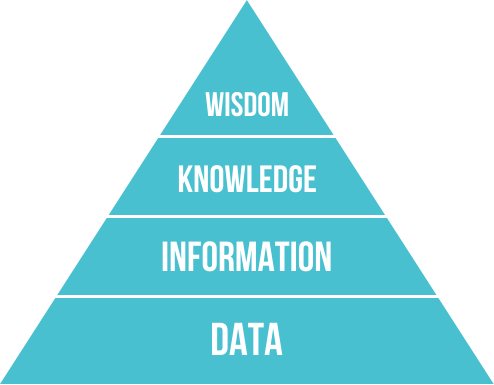
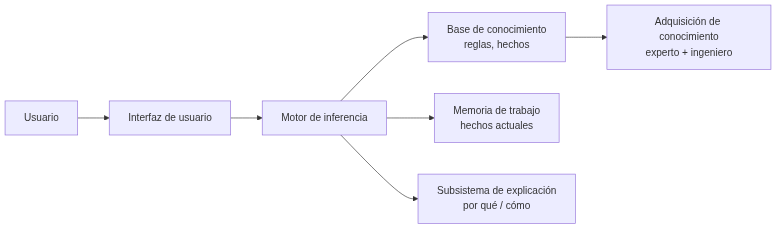
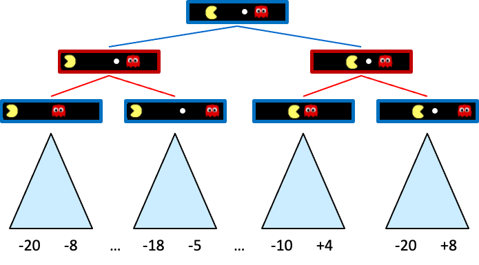
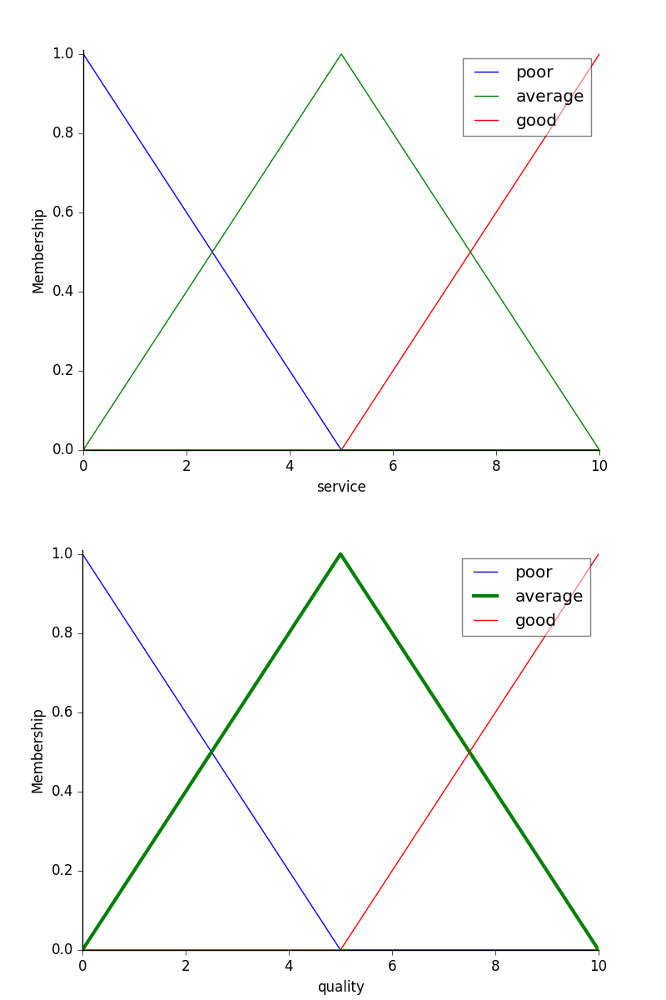
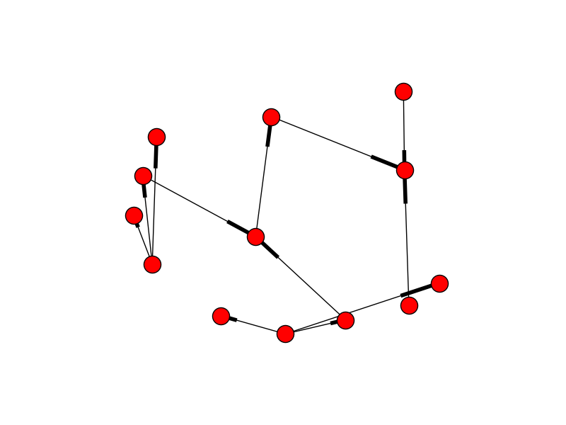
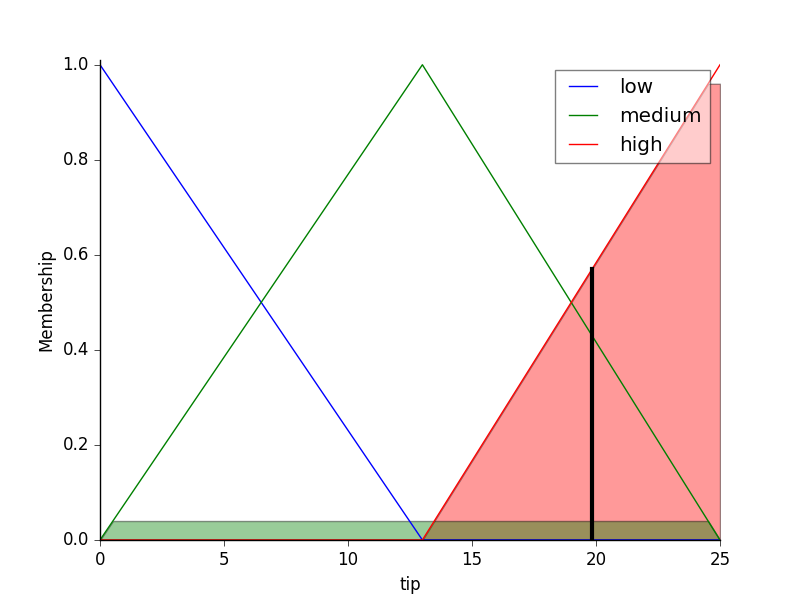
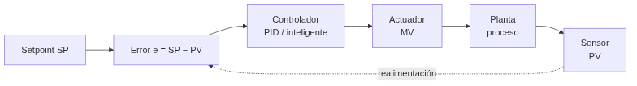
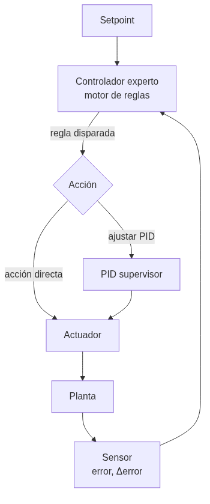

UD05 — Sistemas expertos y controladores inteligentes¶
Unidad 5 · 12 h · semanas 11-15 (7 de diciembre al 14 de enero)
Continúa las reglas y la lógica difusa de RA2, justo antes de que la fragmentación de Navidad parta el curso. Se evalúa con cinco entregables prácticos y la prueba escrita del RA5.
1. Introducción¶
Todo el curso ha sido cómo construir sistemas de IA. Esta unidad da un paso más: los sistemas expertos, que codifican el conocimiento de un experto humano en reglas y lo utilizan para diagnosticar, asesorar y controlar. Y lo conectamos con el control, porque un sistema experto puede actuar como controlador inteligente de un proceso físico, compitiendo con los controladores clásicos (PID).
Antes de construir nada hay que situar qué es el conocimiento y cómo se representa para que una máquina pueda usarlo — esa es la primera pregunta de la inteligencia artificial simbólica, y la respondemos con la jerarquía DIKW y el continuo de representaciones del §5.
El recorrido de la unidad:
- Arquitectura y dinámica de los sistemas expertos (base de conocimiento, motor de inferencia, ciclo reconocer-actuar).
- Estructuras elementales de representación del conocimiento (reglas, marcos, lógica, ontologías, redes semánticas).
- Representar y simular comportamientos con la librería
experta, en dominios muy diversos: diagnóstico médico, clasificación, control de procesos. - Sistemas híbridos reglas/datos: cuando las reglas se combinan o se extraen del aprendizaje automático.
- Sistemas de razonamiento impreciso: la lógica difusa, para trabajar con lo que no es blanco o negro.
- Cómo influye la variación de las características en la dinámica del sistema (sensibilidad y robustez).
- Estrategias de control de un sistema experto.
- Controladores inteligentes (difuso, por reglas, redes neuronales, MPC) y su influencia en el comportamiento del sistema.
- Aplicaciones y tendencias (MYCIN, XCON, BRMS, neuro-simbólico, IA explicable).
Hilo conductor de la unidad
Un sistema experto convierte el conocimiento de un experto en reglas que pueden diagnosticar, asesorar y controlar. Primero situamos qué es ese conocimiento y cómo se representa; después lo construimos y simulamos, con reglas puras, híbridas o difusas; luego estudiamos por qué a veces falla; y por último lo usamos como controlador, comparándolo con el PID clásico.
2. Resultado de aprendizaje y criterios de evaluación¶
RA5 — Aplica sistemas expertos evaluando la influencia de los controladores inteligentes en el comportamiento del sistema.
| CE | Criterio de evaluación | Bloque |
|---|---|---|
| RA5-a | Se ha descrito la dinámica y las estructuras elementales de los sistemas expertos. | §4-5 |
| RA5-b | Se han determinado las destrezas necesarias para representar y simular comportamientos básicos de sistemas de muy diversos ámbitos. | §6-8 |
| RA5-c | Se ha razonado cómo influye la variación de las características de los sistemas en su dinámica de actuación. | §9 |
| RA5-d | Se han desarrollado estrategias de control definiendo los objetivos y las especificaciones de la respuesta del sistema. | §10 |
| RA5-e | Se han relacionado los controladores inteligentes con el comportamiento del sistema. | §11 |
Bloque de contenidos oficial (RD 279/2021, anexo I)
El currículo llama a este bloque, textualmente, «Sistemas Expertos», y le asigna estos contenidos:
- Dinámica de los sistemas expertos.
- Estructuras elementales de los sistemas expertos.
- Representar y simular comportamientos básicos.
- Estrategias de control de un sistema experto.
- Aplicaciones de sistemas expertos.
- Tendencias en sistemas expertos.
Son seis contenidos para cinco criterios de evaluación, y no encajan uno a uno: los dos últimos (aplicaciones y tendencias) no tienen CE propio y se reparten entre todos, mientras que RA5-c (variación de las características) no tiene contenido explícito en el anexo y lo desarrolla el centro (art. 3.3 del Decreto 95/2026).
3. Objetivos de la unidad¶
| Objetivo | Al terminar la unidad serás capaz de… |
|---|---|
| O1 | Situar el conocimiento en la jerarquía DIKW y describir la arquitectura de un sistema experto. |
| O2 | Diferenciar los modos de representación del conocimiento (reglas, frames, lógica, ontologías, redes semánticas). |
| O3 | Representar y simular un comportamiento básico con experta, en un dominio real. |
| O4 | Combinar reglas con datos cuando el conocimiento experto no basta por sí solo. |
| O5 | Aplicar lógica difusa a un problema con incertidumbre. |
| O6 | Explicar cómo influye la variación de reglas, hechos y umbrales en la dinámica (sensibilidad/robustez). |
| O7 | Desarrollar estrategias de control (salience, control de meta) con sus especificaciones. |
| O8 | Relacionar los controladores inteligentes (difuso, por reglas, ANN, MPC) con el comportamiento del sistema y compararlos con un PID. |
| O9 | Conocer aplicaciones reales y tendencias de los sistemas expertos. |
4. Arquitectura y dinámica de los sistemas expertos (RA5-a)¶
4.1 Del dato al conocimiento: la jerarquía DIKW¶
Antes de representar el conocimiento hay que distinguirlo de sus vecinos. La jerarquía DIKW (Data, Information, Knowledge, Wisdom) los ordena:

| Nivel | Qué es | Ejemplo |
|---|---|---|
| Datos | Hechos o valores registrados, independientes de quien los lee | «Un reloj inteligente registra la temperatura corporal» |
| Información | Los datos interpretados por un agente; subjetiva | «La temperatura corporal es 37 ºC» |
| Conocimiento | Información integrada en un modelo del mundo | «Si la temperatura supera 37 ºC, la persona tiene fiebre» |
| Sabiduría | Meta-conocimiento: cuándo y cómo aplicar el conocimiento | «Si tiene fiebre, debe tomar paracetamol» |
Por qué importa esta distinción
Un sistema experto no almacena datos ni información: almacena conocimiento (reglas) y, en los más avanzados, un poco de sabiduría (metarreglas que deciden cuándo aplicar otras reglas — el «control de meta» del §10.1). Confundir los niveles es el error más común al empezar a diseñar uno: se acumulan datos en vez de codificar reglas.
4.2 ¿Qué es un sistema experto?¶
Un sistema experto es un programa de IA que emula el razonamiento de un experto humano en un dominio concreto: codifica su conocimiento en una base de conocimiento y utiliza un motor de inferencia para aplicar ese conocimiento a los hechos del problema. Comenzaron su desarrollo en los años 70 y fueron muy populares esa década y la siguiente: se consideran los primeros sistemas de IA capaces de obtener resultados con utilidad práctica real.

4.3 Componentes¶
| Componente | Función |
|---|---|
| Interfaz de usuario | Vía de las consultas: pregunta datos, muestra resultados y alerta de datos erróneos. Incluye un módulo de comunicaciones (con otros sistemas, útil en automatización industrial) |
| Base de conocimiento (KB) | Reglas y hechos del dominio, formalizados por el ingeniero de conocimiento junto al experto. Puede organizarse como listas, objetos relacionados, cálculo de predicados o redes semánticas |
| Memoria de trabajo (base de hechos) | Hechos actuales: los que aporta el usuario o los sensores, más los deducidos durante el razonamiento. Guarda el histórico de estados de la consulta |
| Motor de inferencia | Evalúa qué reglas se cumplen, resuelve conflictos y ejecuta las acciones. Determina el orden de las acciones y la interacción entre las partes del sistema |
| Subsistema de explicación | Justifica el razonamiento («por qué» y «cómo» llegó a esa conclusión), mostrando las reglas usadas. Ayuda también al ingeniero de conocimiento a depurar el motor y al experto a verificar la coherencia de la base |
| Adquisición de conocimiento | Herramientas para incorporar nuevo conocimiento sin perfil técnico (el famoso bottleneck: conseguir que el experto vuelque lo que sabe es la parte más lenta de construir el sistema) |
La explicación marca la diferencia
La capacidad de explicar su razonamiento es lo que distingue a un sistema experto de un modelo de ML: en dominios regulados (medicina, finanzas) la justificación es obligatoria. MYCIN fue el pionero de esta explicabilidad, mostrando las reglas de inferencia que empleó — aunque, para consultas complejas, enumerar todas las reglas puede resultar tedioso para el usuario.
4.4 El ciclo de ejecución (dinámica)¶
El motor de inferencia opera en un bucle reconocer-actuar:
- Reconocer (match): se comparan los hechos de la memoria de trabajo con las condiciones (LHS) de las reglas; las reglas activas van a la agenda.
- Resolver (resolve): si hay varias reglas activas, se elige una según la estrategia de control (salience, recency, especificidad — ver §10.1).
- Actuar (act): se ejecuta el consecuente (RHS), que declara/modifica/retira hechos, y el ciclo se repite hasta agotar la agenda.
El objetivo de fondo es hacer que la lógica sea explícita en vez de estar enterrada en código que solo revisa un informático: con reglas legibles, el propio experto del dominio puede revisar y mantener el sistema.
4.5 Encadenamiento¶
- Hacia delante (forward, data-driven): parte de los hechos y deduce conclusiones. Ideal para monitorización, control de procesos en tiempo real y planificación.
- Hacia atrás (backward, goal-driven): parte de una meta y busca qué hechos la sustentan, preguntando al usuario solo lo necesario. Ideal para diagnóstico (MYCIN, Prolog).
- Encadenamiento mixto: combina los dos anteriores.
- Otros mecanismos de razonamiento: búsqueda heurística (el proceso de inferencia recorre un árbol) y herencia (en entornos orientados a objetos, un objeto hijo hereda propiedades del padre).
Las dos reglas de inferencia clásicas
Antes de forward/backward chaining está la lógica que los sustenta: Modus Ponens («si P implica Q, y P es verdad, entonces Q es verdad») y Modus Tollens («si P implica Q, y Q no es cierto, entonces P no es cierto»). El encadenamiento hacia delante aplica Modus Ponens repetidamente; el encadenamiento hacia atrás busca qué P sustentaría un Q dado.
4.6 Incertidumbre: factores de certeza¶
MYCIN introdujo los factores de certeza (CF) para manejar la incertidumbre: cada regla tiene un CF y se combinan al encadenar. Alternativas modernas: lógica difusa (§8), teoría de Dempster-Shafer o redes bayesianas (Heckerman & Shortliffe, 1992).
Combinar factores de certeza
Una regla dice «SI hay fiebre alta ENTONCES sospecha de meningitis con CF = 0,6». Otra regla independiente aporta «SI rigidez de nuca ENTONCES sospecha de meningitis con CF = 0,4». MYCIN combina ambos apoyos para dar una confianza conjunta mayor que cada una por separado (combinación de evidencia). Si en cambio hubiera evidencia en contra, los CF se descuentan. De ahí nace el concepto de acumulación de evidencia, que luego se formalizó con redes bayesianas.
Esta gestión explícita de la incertidumbre es una diferencia clave frente a un sistema de reglas «duro» (todo verdadero o falso): permite razonar con conocimiento parcial y explicar el nivel de confianza de una conclusión. La lógica difusa del §8 resuelve el mismo problema de otra forma: en vez de un factor de certeza sobre una regla booleana, deja que el propio hecho sea parcialmente verdadero.
5. Estructuras elementales de representación (RA5-a/b)¶
5.1 Un continuo, no una lista cerrada¶
Representar el conocimiento es uno de los problemas fundamentales de la IA: hay que hacerlo de forma entendible para las máquinas, útil para resolver problemas y eficiente de procesar. Las representaciones forman un continuo:

En un extremo están las representaciones simples (algoritmos): eficientes para el ordenador pero poco flexibles. En el otro, las flexibles (texto natural): muy expresivas pero no directamente utilizables por una máquina. Entre medias viven las que usamos en esta unidad.
5.2 Las representaciones, con sus ventajas y límites¶
| Representación | Estructura | Inferencia | Ventajas | Limitaciones |
|---|---|---|---|---|
| Pares atributo-valor (tripletes objeto-atributo-valor) | Lista de nodos y aristas de un grafo: «el perro es un animal, tiene cuatro patas…» | Recorrido y coincidencia de atributos | Muy simple de construir a partir de descripciones | Poco expresiva para relaciones complejas |
| Reglas de producción | SI ... ENTONCES ... | Forward/backward + resolución de conflictos | Modular, legible, explicable | Difícil modelar jerarquías; lenta con bases grandes |
| Representaciones jerárquicas | Árbol: nodos = conceptos, aristas = relaciones (Animales → Vertebrados → Mamíferos → Perros) | Recorrido del árbol, herencia | Natural para taxonomías | Rígida si un concepto pertenece a varias ramas |
| Marcos (frames) | Registros con ranuras (slots) y valores por defecto | Herencia de clases, disparadores | Taxonomías y conocimiento estructurado | Conflicto con herencia múltiple |
| Lógica formal | Predicados de primer orden (propuesta por Aristóteles hace más de 2000 años) | Resolución, unificación, deducción | Rigor matemático | Explosión combinatoria; poco utilizable directamente por máquinas (salvo un subconjunto, como en Prolog) |
| Redes semánticas | Grafos dirigidos con etiquetas | Búsqueda en grafos, propagación | Intuitiva para relaciones | Semántica ambigua |
| Ontologías | Clases, propiedades, axiomas (OWL) | Razonadores (Pellet, HermiT) | Interoperabilidad, reutilización | Curva de aprendizaje alta |
Lo mismo en cuatro formas distintas
El hecho «si la temperatura supera 37 ºC, la persona tiene fiebre» se puede escribir como regla de producción (SI temperatura > 37 ENTONCES fiebre), como lógica proposicional (\(p \rightarrow q\), con \(p\): «tiene fiebre», \(q\): «debe tomar paracetamol»), como jerarquía (Síntomas → Fiebre → Paracetamol) o como par atributo-valor (persona.temperatura = 38.2, evaluado por una regla externa). Elegir la representación es elegir qué es fácil de hacer con ese conocimiento después.
Regla práctica de esta unidad
Usaremos sobre todo reglas de producción (con experta) y, en el §8, lógica difusa (con scikit-fuzzy). Las ontologías y las redes semánticas se mencionan como alternativas; los frames y la lógica formal se tratan a nivel conceptual.
6. Representar y simular comportamientos con experta (RA5-b)¶
Para simular un comportamiento se escribe la base de conocimiento en experta y se ejecuta el ciclo de inferencia. Recordamos el parche obligatorio para Python 3.10+ (la librería es de 2019 y collections.Mapping desapareció en esa versión):
1 2 3 4 5 6 7 8 9 10 11 12 13 14 15 16 17 18 19 20 21 22 23 24 25 26 27 28 29 30 | |
Salida esperada:
1 2 | |
Otro ámbito: clasificación de animales (sistema de producción clásico)
El mismo motor experta simula un sistema de clasificación con reglas de un zoólogo:
1 2 3 4 5 6 7 8 9 10 11 12 13 14 15 16 17 18 | |
Así se comprueba que un sistema experto representa y simula el comportamiento de un dominio sin programar la lógica imperativamente: el motor aplica las reglas hasta llegar a la conclusión.
6.1 «Muy diversos ámbitos»: los notebooks de la unidad¶
El CE b exige simular comportamientos en dominios distintos, no repetir el mismo ejemplo. Esta unidad trae varios notebooks ejecutados de verdad, en dominios reales (la lista completa está en las actividades guiadas y las entregables):
| Notebook | Dominio | Qué simula |
|---|---|---|
UD05_N01_experta_primeros_pasos.ipynb | Introducción | Primeros pasos con experta: hechos, reglas, DefFacts |
UD05_N02_piedra_papel_tijera.ipynb | Juego | Piedra, papel o tijera decidido por reglas |
UD05_N03_clasificacion_animales.ipynb | Zoología | El ejemplo de arriba, completo y ejecutado |
EX1 · lesión de rodilla | Medicina | Diagnóstico de una lesión a partir de síntomas, con experta |
UD05_N04_reglas_desde_datos_titanic.ipynb | Datos históricos | Reglas extraídas de datos, no escritas a mano (§7) |
EX2 · valor de mercado | Deporte | Estimación híbrida reglas + aprendizaje automático (§7) |
EX3 · centrocampistas · EX4 · quemador de gas | Deporte · industria | Lógica difusa (§8) y control de un proceso real (§10-11) |
Por qué importa la diversidad
Un sistema experto no es una técnica de un solo dominio: la misma arquitectura (base de conocimiento + motor de inferencia) sirve para diagnosticar una rodilla, valorar a un futbolista o regular un quemador de gas. Lo que cambia es el conocimiento que se codifica, no el motor que lo aplica.
7. Sistemas híbridos reglas/datos (RA5-b)¶
Un sistema experto puro necesita que alguien escriba las reglas a mano. Pero a veces el conocimiento del dominio ya está en los datos, o conviene mezclar las dos fuentes. Hay dos enfoques:
- Deducir reglas a partir de datos: un algoritmo genera reglas legibles a partir de un conjunto de entrenamiento, en vez de que las escriba una persona. Facilita la interpretación del razonamiento, porque el resultado sigue siendo
SI ... ENTONCES ...en vez de una caja negra. - Integrar reglas definidas por el usuario con aprendizaje automático: el experto pone las reglas de partida y el aprendizaje automático las mejora con datos.

7.1 Bibliotecas del segundo enfoque¶
| Biblioteca | Qué hace |
|---|---|
| Human-Learn | Permite definir y dibujar reglas propias como si fueran un clasificador de scikit-learn (FunctionClassifier), y combinarlas con aprendizaje automático |
| skope-rules | Analiza los datos y deduce reglas de clasificación; permite auditarlas e interpretarlas |
FIGS (imodels) | Genera reglas fáciles de interpretar combinando varios árboles pequeños («sumas de árboles»), en vez de un único árbol grande difícil de leer |
| spaCy | Reglas para extraer información de texto: útil cuando no hay suficientes datos etiquetados o para casos muy específicos |
UD05_N04_reglas_desde_datos_titanic.ipynb: reglas que salen de los datos, no de un experto
En vez de que alguien escriba a mano «si viajas en primera clase y eres mujer, sobrevives», FIGS analiza los datos históricos del Titanic y genera esa regla por sí solo, junto con otras. El resultado sigue siendo legible —un árbol de reglas pequeño—, pero nadie lo escribió a mano: se dedujo de los datos. Es el primer enfoque de la tabla de arriba.
EX2: valor de mercado de futbolistas con Human-Learn + FIGS
El entregable EX2 combina las dos ideas sobre los mismos datos (FIFA 22): una FunctionClassifier de Human-Learn (reglas que tú defines sobre atributos del jugador) y un FIGSClassifier que deduce sus propias reglas del conjunto de entrenamiento. Comparar los dos resultados sobre el mismo problema es la mejor forma de sentir la diferencia entre los dos enfoques híbridos.
Esto no es una técnica aislada: es una tendencia
Los sistemas híbridos reglas/datos son la puerta de entrada a los sistemas neuro-simbólicos y a las reglas como guardarraíl del ML que se tratan en el §12.2. No son un tema aparte de los sistemas expertos: son su evolución natural cuando el conocimiento no cabe entero en la cabeza de un experto.
8. Sistemas de razonamiento impreciso: lógica difusa (RA5-b/d)¶

8.1 De lo binario a lo continuo¶
La lógica proposicional clásica es binaria: un enunciado es cierto o falso. Pero los humanos no razonamos así — «hace frío» no es verdadero o falso de forma tajante, es una cuestión de grado. La lógica difusa (o borrosa) extiende la lógica proposicional para trabajar con esa incertidumbre:
- Los valores de verdad son números reales en el intervalo \([0, 1]\): 0 es falso, 1 es cierto, 0,5 es «cierto al 50 %».
- La pertenencia de un elemento a un conjunto viene dada por una función de pertenencia, \(\mu_A(x)\): el grado de pertenencia de \(x\) al conjunto \(A\).
- Conceptos como húmedo o frío son difíciles de definir con precisión, pero la lógica difusa los define con funciones de pertenencia — lo que facilita crear dispositivos como termostatos: «si la temperatura es fría, entonces enciende la calefacción».
Un sistema de razonamiento impreciso es un sistema basado en reglas que usa lógica difusa. Permite trabajar con valores continuos, modela mejor el conocimiento humano y es muy apropiado para sistemas de control — por eso enlaza directamente con el §10 y el §11.
8.2 Conceptos básicos¶
| Concepto | Qué es | Ejemplo |
|---|---|---|
| Variable lingüística | Variable que toma valores lingüísticos | Temperatura |
| Valores lingüísticos | Los valores que puede tomar esa variable | Frío, Calor |
| Función de pertenencia | Asigna a cada valor un grado de pertenencia a un valor lingüístico | \(27\,°C \rightarrow Calor = 0{,}8\) |
| Regla difusa | Regla que usa valores difusos | «Si la temperatura es fría, entonces calefacción alta» |
| Función de agregación | Combina los valores difusos de varias reglas en una conclusión | \(Calor=0{,}8,\ H\acute{u}medo=0{,}7 \rightarrow Sensaci\acute{o}n\ desagradable=0{,}8\) |
8.3 El funcionamiento en tres pasos¶
- Fuzzificación: convierte los datos de entrada precisos en valores difusos, usando las funciones de pertenencia. \(27\,°C \rightarrow Calor=0{,}8,\ MuchoCalor=0{,}2\).
- Evaluación de las reglas: se aplican las reglas del sistema, combinando las funciones de pertenencia de las variables de entrada para deducir la relevancia de la salida. Por ejemplo: «si la temperatura es alta y la humedad es baja, la velocidad del ventilador debe ser alta».
- Desfuzzificación: convierte la conclusión difusa de vuelta en un valor preciso, con una función de agregación (normalmente centro de gravedad o máximo).

Las funciones de pertenencia más usadas son trapezoidales y triangulares; las sinusoidales sirven para representar periodos, y las sigmoidales, probabilidades.

8.4 Ejemplo trabajado: la propina del restaurante¶
Es el ejemplo canónico de scikit-fuzzy, y el que verás resuelto paso a paso en el Taller 2.
Variables de entrada (funciones triangulares):
- Calidad del servicio: baja \([0,5]\) · media \([0,10]\) · alta \([5,10]\)
- Calidad de la comida: mala \([0,5]\) · media \([0,10]\) · buena \([5,10]\)

Variable de salida: propina — baja \([0,13]\) · media \([0,25]\) · alta \([13,25]\)

Reglas:
- SI (servicio es baja O comida es mala) ENTONCES propina es baja
- SI (servicio es media) ENTONCES propina es media
- SI (servicio es alta O comida es buena) ENTONCES propina es alta

Inferencia: con un servicio de 9,8 y una comida de 6,5, el sistema desfuzzifica una propina de 19,24 € — en la banda alta, coherente con un servicio casi perfecto y una comida notable.

De la propina al quemador de gas
Este ejemplo es idéntico en estructura al Taller 3 (control de un quemador de gas) y al entregable EX4: variables de entrada difusas, reglas lingüísticas, una salida desfuzzificada. La diferencia es que ahí la salida no es una propina, es la potencia de un actuador real — es el paso del §8 al §11.
9. Variación de características y dinámica (RA5-c)¶
9.1 Sensibilidad y robustez¶
- Sensibilidad: cómo cambian las conclusiones ante pequeñas desviaciones en los parámetros o datos de entrada. Un sistema muy sensible detecta pronto anomalías, pero falsas alarmas ante ruido.
- Robustez: capacidad de mantener conclusiones estables y seguras ante perturbaciones, ruido o fallos parciales.
9.2 Tres mecanismos de variación¶
| Qué varía | Efecto en la dinámica |
|---|---|
| Las reglas (estructura lógica) | Añadir condiciones al antecedente → más inercia (la regla se dispara menos); simplificar → sobreactivación (reglas se disparan ante transitorios sin riesgo) |
| Los hechos (perturbaciones) | Ruido en un sensor (p. ej. CO en un túnel oscilando alrededor del umbral) → el sistema conmuta actuadores sin parar |
| Los umbrales de certeza | Subir el umbral de un diagnóstico → menos falsos positivos pero puede ignorar alertas tempranas |
El problema de la histéresis
Un sensor de CO en un túnel oscila entre 28 y 32 ppm con umbral en 30. Sin histéresis, los extractores se encienden y apagan en cada ciclo. Soluciones: una regla de histéresis temporal (la alerta debe mantenerse 30 s) o un controlador difuso que suavice la transición (enlaza con el §8).
10. Estrategias de control de un sistema experto (RA5-d)¶
10.1 Control de la agenda (resolución de conflictos)¶
| Estrategia | Qué hace |
|---|---|
| Salience | Prioridad numérica explícita de cada regla (las de emergencia van antes) |
| Recency | Prefiere las reglas con hechos más recientes (time-tags) |
| Specificity | Prefiere la regla con más condiciones en el antecedente |
| Control de meta (metarrazonamiento) | Reglas de nivel superior que modifican prioridades, activan grupos de reglas según el modo (arranque, operación, parada) o cambian la estrategia. Es la sabiduría de la jerarquía DIKW del §4.1, aplicada al propio motor |
10.2 Especificaciones de respuesta¶
Para controlar un proceso, el sistema experto debe cumplir especificaciones sobre la respuesta de la variable controlada:
| Especificación | Qué mide |
|---|---|
| Precisión | Error en régimen permanente (diferencia entre la variable y el setpoint al estabilizarse) |
| Tiempo de respuesta | Tiempo de subida (tr) y de asentamiento (ts) |
| Estabilidad | Ausencia de oscilaciones; sobreimpulso (overshoot) máximo aceptable |
| Alcance | Rango de operación de la planta |
Nivel FP
En este módulo se trabajan estas especificaciones de forma conceptual (qué miden y por qué importan), sin las fórmulas de la teoría de control de ingeniería. El foco está en definir el objetivo y saber interpretar si la respuesta lo cumple.
10.3 Ejemplo guiado: definir las especificaciones de un controlador de climatización¶
Recorremos juntos el razonamiento que repetirás en el Taller 3, antes de aplicarlo al quemador de gas real de EX4.
Problema: queremos controlar la temperatura de una sala para que llegue a 21 ºC.
Paso 1 · Setpoint y precisión. La variable controlada (temperatura) debe estabilizarse en 21 ºC con un error en régimen permanente de ±0,5 ºC como máximo.
Paso 2 · Tiempo de respuesta. La sala debe alcanzar la banda aceptable (20,5-21,5 ºC) en menos de 15 minutos desde el arranque (tiempo de asentamiento).
Paso 3 · Estabilidad y sobreimpulso. Se tolera un sobreimpulso máximo de 1 ºC por encima del setpoint (sin oscilaciones que dañen el equipo).
Paso 4 · Elegir el controlador. Con un PID bien sintonizado se cumple en un sistema lineal, pero la sala tiene inercia térmica y perturbaciones (puertas, sol). Un controlador experto o difuso con reglas del operador («si la diferencia es grande → máxima potencia, y al acercarse → reducir para no sobrepasar») consigue la respuesta con menos sobreimpulso y más robustez ante las perturbaciones.
Paso 5 · Comprobar y ajustar. Se simula la respuesta y se mide ts y el sobreimpulso; si no se cumple la especificación, se ajustan reglas o ganancias (análisis de sensibilidad, §9).
Conclusión del ejemplo guiado
Controlar no es «conectar un motor»: es definir el objetivo (precisión), acotar el tiempo, limitar el sobreimpulso y elegir el controlador que lo cumpla, verificándolo con una simulación. Ese es el sentido del CE d y del CE e — y exactamente lo que se te pide en EX4, con un quemador de gas real en vez de una sala.
11. Controladores inteligentes (RA5-e)¶
11.1 Del control clásico al control inteligente¶
Un lazo de control clásico compara el setpoint (SP) con la variable medida (PV), calcula el error y aplica una acción (MV) con un controlador PID (proporcional-integral-derivativo). El PID es eficaz en sistemas lineales, pero sufre con retrasos, no linealidades y perturbaciones multivariable.

La acción del PID es u = Kp·e + Ki·∫e + Kd·de/dt: la parte proporcional responde al error, la integral elimina el error residual y la derivada reduce el sobreimpulso. Sus límites: no predice el futuro, se degrada con retrasos y no linealidades, y hay que re-sintonizarlo cuando la planta envejece (ganancias fijas).
Los controladores inteligentes sustituyen o complementan al PID usando técnicas de IA:
| Controlador | Cómo funciona | Ventaja frente al PID |
|---|---|---|
| Control difuso | Reglas lingüísticas + funciones de pertenencia (Mamdani/Sugeno) — el §8 aplicado al control | Robusto ante ruido y no linealidad; no necesita modelo |
| Control por reglas (experto) | Motor de inferencia con reglas del operador experto | Captura heurísticas de operadores; fácil de entender |
| Redes neuronales | Aprenden la dinámica inversa de la planta | Adaptación a sistemas no lineales |
| Control predictivo (MPC) | Predice la trayectoria futura y optimiza la acción | Anticipa restricciones; proactivo |
11.2 Ejemplos con datos¶
| Caso | Mejora frente a PID |
|---|---|
| Control térmico difuso | Tiempo de asentamiento −76 % (416 s → 100 s); sobreimpulso 5,64 % → 0 % |
| Horno de fundición (ANN) | MSE 132,75 frente a 134,13 del PID (ligera mejora) |
| Mitsubishi (aire acondicionado) | Calienta/enfría 5× más rápido, −24 % consumo |
| DeepMind centros de datos | −40 % en energía de refrigeración (−15 % PUE overhead) |
¿Controlador inteligente siempre gana?
No siempre. El PID es simple, barato y fiable en sistemas bien modelados. El controlador inteligente aporta cuando hay no linealidad, retraso o ruido fuerte. La decisión es empezar simple y añadir inteligencia solo si se justifica — es lo que comprobarás tú mismo en EX4, que pide dos enfoques distintos para el mismo quemador.
11.3 El sistema experto como controlador¶
El patrón del control experto (Åström, Anton y Årzén, 1986) usa un motor de inferencia dentro del lazo: el sistema evalúa el error y su variación, decide la acción por reglas (supervisando y ajustando incluso un PID) y explica la decisión. Es la base de sistemas industriales como Gensym G2 (refinerías, energía, farmacia) desde los años 80.

El controlador experto puede actuar de dos formas: directamente (decide la acción por reglas, por ejemplo «si el error es negativo grande y aumenta → máxima potencia») o supervisando un PID (ajusta sus ganancias cuando detecta que la respuesta se degrada). En ambos casos, la decisión es explicable: se puede consultar qué regla se disparó y por qué.
Regla de un controlador experto de climatización
1 2 3 | |
12. Aplicaciones y tendencias (contenidos del RA5)¶
12.1 Aplicaciones por sector¶
| Sector | Uso |
|---|---|
| Industria | Control de procesos, diagnóstico de máquinas, mantenimiento |
| Salud | Diagnóstico asistido (MYCIN, GARVAN-ES1), dosificación |
| Finanzas | Asesoramiento, detección de fraude por reglas |
| Telecomunicaciones | Gestión de redes, diagnóstico de averías |
Ejemplos clásicos con datos
- MYCIN (Stanford, 1972): ~500-600 reglas de diagnóstico clínico; precisión 69-70 % (equiparable a especialistas). Pionero de la explicación y los factores de certeza (§4.6).
- XCON/R1 (CMU/DEC, 1978): configuración de ordenadores VAX; pasó de 250 a más de 6.200 reglas en 1986; precisión 95-98 % y ahorro de ~25 M$/año para DEC.
- DENDRAL (1965): primer sistema experto; acotaba millones de isómeros moleculares a un conjunto manejable.
- SID (DEC): generó el 93 % de las puertas lógicas del VAX 9000.
- Cyc (1984): proyecto de enciclopediar el sentido común (millones de hechos y reglas).
12.2 Tendencias¶
- BRMS (Business Rule Management Systems): motores de reglas empresariales como Drools (Apache KIE) con estándares DMN/JSR-94. Permiten a las empresas gestionar miles de reglas de negocio separadas del código, con motores optimizados (PHREAK) que escalan linealmente.
- Sistemas neuro-simbólicos (3.ª ola de la IA): combinan redes neuronales (aprendizaje) con reglas y razonamiento simbólico (lógica), reduciendo alucinaciones y aportando explicabilidad — es la generalización de los sistemas híbridos reglas/datos del §7. Ejemplo: Amazon utiliza arquitecturas neuro-simbólicas en sus motores de compra para contrastar las salidas generativas con hechos y reglas.
- IA explicable (XAI): MYCIN fue el origen de la explicación; hoy se usan SHAP/LIME para explicar modelos y la normativa exige el derecho a explicación del RGPD (enlaza UD06).
- Agentes y razonamiento declarativo: agentes que planifican con reglas y guardas lógicas de seguridad, garantizando que las decisiones distribuidas cumplen restricciones.
- Reglas como guardarraíl del ML: usar reglas para validar y acotar las salidas de los modelos (p. ej. un LLM no puede emitir una orden fuera de los rangos seguros definidos por reglas). Es la misma idea del §7, llevada a los modelos generativos.
Del pasado al presente
Los sistemas expertos «clásicos» (MYCIN, XCON) demostraron que el conocimiento declarativo y la explicación importan. Hoy esa idea no ha muerto: vive en los BRMS, en los sistemas neuro-simbólicos y en los guardarraíles que aseguran las salidas del ML. Saber construir y auditar sistemas basados en reglas —puras, híbridas o difusas— sigue siendo una competencia valiosa.
13. Puntos clave de la unidad¶
- La jerarquía DIKW distingue dato, información, conocimiento y sabiduría: un sistema experto almacena conocimiento (reglas) y, en su forma más avanzada, sabiduría (metarreglas).
- Un sistema experto codifica el conocimiento de un experto en una base de conocimiento y lo aplica con un motor de inferencia (ciclo reconocer-actuar, forward/backward).
- La explicación del razonamiento es su gran ventaja frente al ML (obligatoria en dominios regulados).
- La representación del conocimiento forma un continuo: pares atributo-valor, reglas, jerarquías, frames, lógica, redes semánticas u ontologías.
- Con
experta(parche Py3.10+) se simulan comportamientos de ámbitos muy diversos: medicina, zoología, deporte, industria. - Los sistemas híbridos reglas/datos (Human-Learn, FIGS, skope-rules) combinan el conocimiento experto con lo que aprenden los datos, cuando las reglas escritas a mano no bastan.
- La lógica difusa extiende la lógica a valores continuos \([0,1]\), con fuzzificación, evaluación de reglas y desfuzzificación — clave para el control de procesos reales.
- Sensibilidad vs robustez: variar reglas, hechos o umbrales cambia la dinámica (inanición, sobreactivación, falsas alarmas); la histéresis o el control difuso la estabilizan.
- Las estrategias de control (salience, control de meta) y las especificaciones (precisión, tiempo, estabilidad) definen la calidad de la respuesta.
- Los controladores inteligentes (difuso, por reglas, ANN, MPC) superan al PID en sistemas no lineales, con datos como −76 % de asentamiento o 0 % de sobreimpulso.
- Tendencias: BRMS/Drools, neuro-simbólico, XAI, reglas como guardarraíl del ML.
14. Glosario¶
| Término | Definición |
|---|---|
| Dato | Hecho o valor registrado, independiente de quien lo interpreta |
| Información | Un dato interpretado por un agente |
| Conocimiento | Información integrada en un modelo del mundo |
| Sabiduría | Meta-conocimiento: cuándo y cómo aplicar el conocimiento |
| Sistema experto | Programa de IA que emula el razonamiento de un experto en un dominio |
| Base de conocimiento | Reglas y hechos del dominio |
| Memoria de trabajo | Hechos actuales del problema |
| Motor de inferencia | Ejecuta el ciclo reconocer-actuar |
| Ingeniero de conocimiento | Profesional que formaliza el conocimiento del experto |
| Adquisición de conocimiento | Proceso de capturar el conocimiento (bottleneck) |
| Subsistema de explicación | Justifica el razonamiento del sistema |
| Forward chaining | Encadenamiento hacia delante (data-driven) |
| Backward chaining | Encadenamiento hacia atrás (goal-driven) |
| Modus Ponens | Si P implica Q y P es verdad, Q es verdad |
| Modus Tollens | Si P implica Q y Q es falso, P es falso |
| Factor de certeza | Medida de confianza de una conclusión (MYCIN) |
| Frame | Estructura con ranuras y valores por defecto |
| Red semántica | Grafo de conceptos y relaciones |
| Ontología | Esquema formal de clases y propiedades (OWL) |
| Sistema híbrido reglas/datos | Combina reglas escritas o deducidas con aprendizaje automático |
| FIGS | Algoritmo que genera reglas interpretables como suma de árboles pequeños |
| Lógica difusa | Extensión de la lógica a valores continuos en \([0,1]\) |
| Variable lingüística | Variable que toma valores lingüísticos (p. ej. «temperatura») |
| Función de pertenencia | Grado de pertenencia de un valor a un conjunto difuso |
| Fuzzificación | Conversión de un valor preciso a valores difusos |
| Desfuzzificación | Conversión de una conclusión difusa a un valor preciso |
| Salience | Prioridad numérica de una regla |
| Control de meta | Metarreglas que gestionan la propia inferencia |
| Sensibilidad | Variación de las conclusiones ante perturbaciones pequeñas |
| Robustez | Estabilidad de las conclusiones ante ruido o fallos |
| Histéresis | Retardo en el cambio de estado para evitar conmutaciones |
| PID | Controlador proporcional-integral-derivativo |
| Lazo de control | SP → error → controlador → planta → PV |
| Error en régimen permanente | Diferencia residual entre variable y setpoint |
| Sobreimpulso (overshoot) | Exceso máximo sobre el setpoint durante el transitorio |
| Tiempo de asentamiento | Tiempo hasta que la respuesta entra en la banda aceptable |
| Control difuso | Controlador basado en reglas lingüísticas y pertenencia |
| Control predictivo (MPC) | Optimiza la acción prediciendo la trayectoria futura |
| BRMS | Sistema de gestión de reglas de negocio (Drools) |
| Neuro-simbólico | Combinación de redes neuronales y razonamiento simbólico |
| XAI | IA explicable |
15. FAQ¶
¿Un sistema experto puede aprender de los datos?
No por sí mismo: las reglas las escribe un experto. Por eso es totalmente explicable, pero requiere que el conocimiento esté disponible y formalizado (el famoso bottleneck). Los sistemas híbridos del §7 son justo la respuesta a esta limitación: dejan que el aprendizaje automático deduzca o mejore las reglas.
¿Los sistemas expertos están anticuados?
No: los motores de reglas siguen en BRMS empresariales (Drools, SAP) y resurgen en los sistemas neuro-simbólicos y como guardarraíl del ML. MYCIN/XCON fueron los pioneros, pero la tecnología evolucionó (RETE → PHREAK, estándares DMN).
¿Por qué un sistema experto puede dar falsas alarmas?
Por sensibilidad excesiva: si un sensor tiene ruido y el umbral de la regla es muy justo, el sistema conmuta sin parar. Se corrige con histéresis, suavizado o un controlador difuso.
¿Qué es mejor, un PID o un controlador inteligente?
Depende del sistema. El PID es simple y fiable en sistemas lineales; el controlador inteligente (difuso, ANN, MPC) gana en no linealidades, retrasos o ruido. Se empieza simple y se añade inteligencia si hace falta — es lo que comprobarás con las dos versiones que pide EX4.
¿experta funciona en Python moderno?
La librería (2019) falla en Python 3.10+ por frozendict. Con el parche collections.Mapping = collections.abc.Mapping funciona igual de bien. Existe también un fork (om-experta) que lo resuelve de otra forma, pero está archivado desde 2023: en este módulo usamos siempre el parche, para no tener dos soluciones al mismo problema.
¿Cuándo uso reglas puras y cuándo un sistema híbrido?
Si el experto puede formalizar el conocimiento completo, con reglas puras basta y son más explicables. Si el conocimiento es parcial, cambia con el tiempo, o hay muchos datos disponibles, un sistema híbrido (§7) aprovecha lo mejor de las dos fuentes.
¿Los sistemas expertos pueden explicar sus decisiones?
Sí, y es su gran ventaja: el subsistema de explicación puede responder «¿por qué?» y «¿cómo?» mostrando las reglas usadas. MYCIN fue el primero. Hoy esto se llama IA explicable (XAI) y es obligatorio en algunos dominios (derecho a explicación del RGPD).
16. Sesiones¶
| Semana | Horas | Contenido | CE |
|---|---|---|---|
| 11 | 3 | DIKW, arquitectura y dinámica; estructuras de representación | RA5-a |
| 12 | 3 | Taller 1 (experta) + guiadas; EX1; sistemas híbridos reglas/datos (EX2) | RA5-b |
| 13 | 3 | Lógica difusa: Taller 2 (propinas); variación y dinámica | RA5-b, RA5-c |
| 14 | 3 | Estrategias de control; controladores inteligentes; Taller 3 | RA5-d |
| 15 | 3 | EX3, EX4; aplicaciones y tendencias; evaluación | RA5-d, RA5-e |
17. Recursos¶
- Ejercicios de la unidad
- Talleres: T01 · simular un sistema experto · T02 · lógica difusa · T03 · controlador experto
- Actividades guiadas — 6 notebooks de introducción y práctica
- Actividades entregables — 5 notebooks evaluables (
EX0-EX4), con sus rúbricas
Referencias de la unidad
18. Evaluación¶
| Peso | Instrumento |
|---|---|
| 40 % actividades | Media de los cinco entregables (EX0-EX4); cada uno con su rúbrica sobre 10 |
| 60 % prueba escrita | Prueba del RA5 en Moodle: ~15 preguntas de test de 4 opciones con penalización del 33,33 % + 2 de desarrollo |
- La normativa exige alcanzar todos los RA del módulo para superarlo (art. 5.1 de la Orden 8/2025: la calificación del módulo está «en función de la consecución de los RA»; y las Instrucciones 26-27, que impiden calificar positivamente un módulo con RA no superados). El centro concreta ese mandato exigiendo ≥ 5 en cada RA.
- Los entregables
EX1-EX4cubren un dominio fijo cada uno (medicina, deporte × 2, industria);EX0es de libre elección y premia la originalidad.
19. Recuperación¶
Actividades del programa de recuperación individual por RA (art. 14.4 Orden 8/2025): repetir la construcción de un sistema experto con un problema distinto y las pruebas de autoevaluación de la unidad.